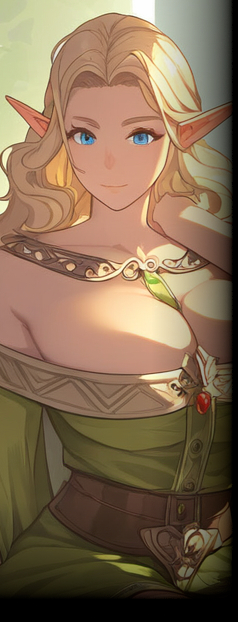

ムーンゲートの近辺に存在するエルフの村。
ベアトリスを首長とし、ヘルエスタ王国内の森林地帯に存在する。王都までは馬車で数日ほどの距離。
森の中はマナの影響で入り組んだ地形に加えて空間が歪んでおり、エルフたちの案内がなければ辿り着くことは困難。
ノルダの歴史は比較的浅く、成立は今から70年ほど前の出来事になる。
元々は様々な理由で棲む場所を失ったエルフたちが身を寄せ合うことで自然発生した共同体であり、そこに現領主のベアトリスが合流。
ベアトリスの交渉によって正式な自治区として承認された過去がある。独立したわけではなく、あくまでヘルエスタ領の一部としての自治を認められた形になる。
以来、王国領内で行き場を失ったエルフたちの受け皿として運営されている。
元々王都の周辺で生活していた者も多いため、エルフの共同体としては異種族に慣れている者が多い。
そのため比較的異種族にも寛容で、外部の人間が森で迷ったのを見かね、村の中で数日間面倒を見るといったこともある。
とはいえ、エルフのセオリー通り、嫌悪の目で異種族を見る者も多い。
首長のベアトリスは王都から爵位を与えられた貴族だが、彼女を「女王」、その娘であるエレシアを「姫」と呼び、王族のように扱う習慣が出来上がっている。
これは彼女らに対する敬意の形であると同時に、信用ならないアーディアンなど、自分たちは王として戴かない、という意思が根底にある。
一応は互いを友好関係と認識しているものの、領民間の意識も友好的とは限らないようだ。
|
 |
▼ベアトリス
【ノルダ】の首長を務めるエルフの女性。
物腰は柔らかだが、コミュニティの長として相応の威厳も漂わせる。
|